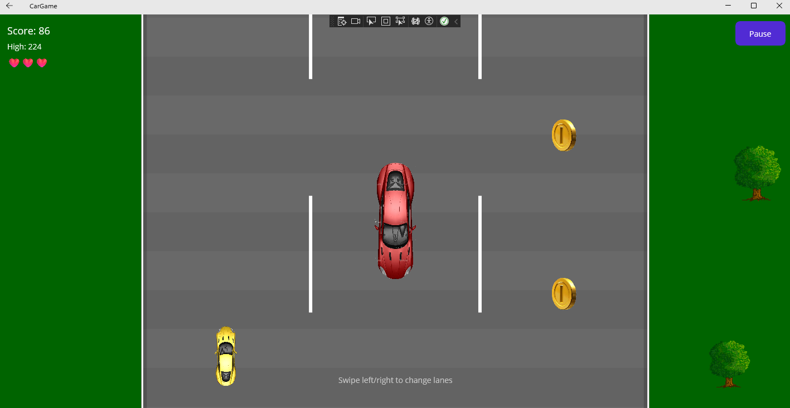
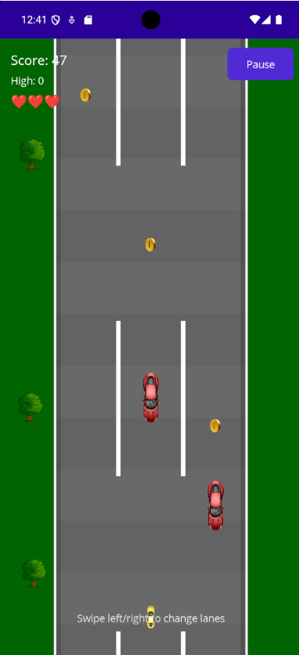
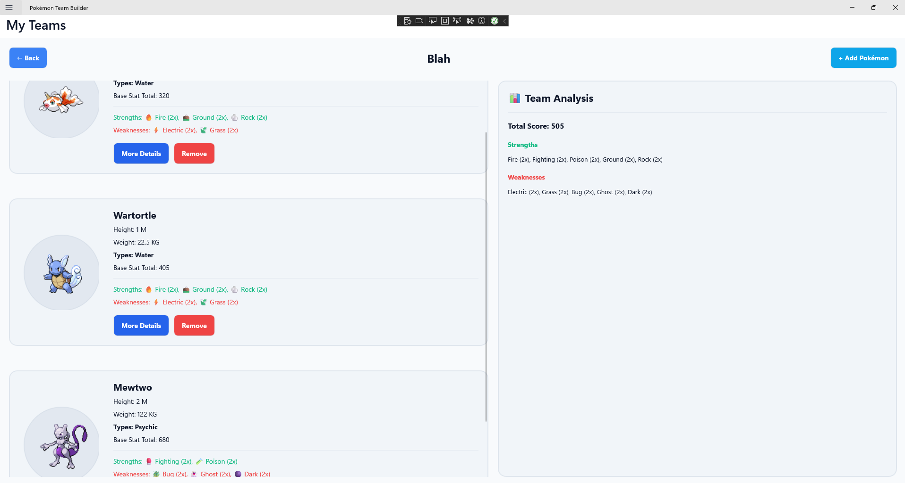
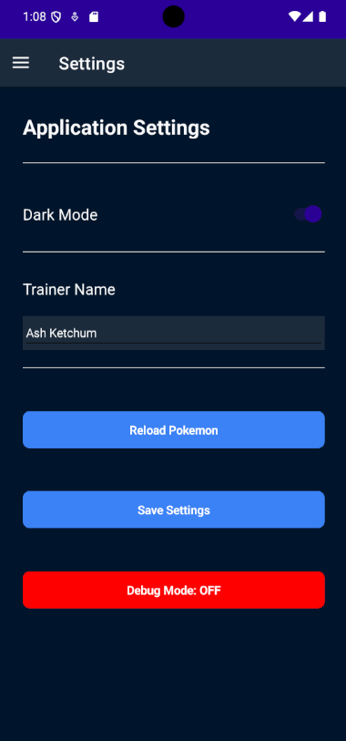

Cross Platform Application Development
This module is about developing applications that can run on multiple platforms.
We will concentrate on:
We will use:
The goal isn’t simply to make an application that compiles.
We want to understand how an application is structured, how the UI communicates with the code behind it, and how the same application can target different platforms.
Does everybody use an Android phone?
Does everybody use Windows?
Does everybody use PS5?
Etc. etc.
From a business point of view, it makes sense to deliver your product to as many customers as possible.
This means you will often want to develop for multiple different systems.
Websites already work across platforms.
But maybe we need more functionality than what we can build in a web browser.
We may want:
A cross-platform framework can potentially allow us to build these applications without writing a completely separate application for every platform.
Java should work across platforms.
You compile the .java file into a .class.
That class can be used on:
This is because Java makes use of a Virtual Machine.
Even then, some issues may still arise.
You may develop software using the same language, let’s say C++, for both Windows and Linux.
Basic command-line applications will probably work.
But what about more complicated applications?
Drawing to the screen in Windows uses a different library than drawing to the screen in Linux or Mac.
versus something appropriate for the target platform.
The APIs may use completely different functions to achieve the same thing.
Suddenly, managing one project for multiple systems becomes much more difficult.
Unless we come up with an in-between for us.
We interact with the in-between.
The in-between then deals with the target platform.
For example, for Windows and Linux we could use Qt.
We write against Qt rather than directly against every operating system’s GUI APIs.
What about games?
Companies want to develop for multiple systems.
Unless you’re Nintendo.
Games are developed using the same base language, typically C++, and then targeted towards the desired system.
Drawing a triangle on an Xbox is different from drawing one on a PlayStation, which is different again on a Switch.
The platforms also have different APIs.
They also have different buttons on the controllers.
We want this to be reflected on screen too.
Game designers and developers are increasingly not low-level graphics programmers.
They need something easier to use.
Rather than writing an awful lot of if statements, #defines, or completely different projects, why not use something that abstracts that away from us?
A framework or engine can target the platform for us.
We target the framework and let it take care of many of the platform-specific details.
You’ve probably heard of:
Developers target these engines.
The engine takes care of many of the lower-level platform-specific details.
Can you think of any problems that may arise with this approach?
For example, a game targeting Nintendo Switch may require specific changes because the hardware is different.
Star Wars Outlaws probably needed a lot of specific work to get running on Switch 2.
The same analogy applies to developing an app for:
Even when we use a framework to help us target multiple systems, we still need to be aware of differences.
Remember GUI last year?
Remember responsive websites?
The framework helps.
It doesn’t do all the work for us.
We will eventually build applications that can run on multiple platforms.
Here are some examples of applications developed by students in previous years.


More examples:


The important thing is that these don’t need to be enormous applications.
A relatively small, well-designed application can demonstrate the same concepts.
You’ve already worked with:
You are also doing C in another module this semester.
Gaining skills in multiple languages will be an advantage.
You will soon start to see the similarities between them.
Once you understand the underlying programming concepts, learning another language becomes much easier.
So now it’s time for C# (C-Sharp).
C# is:
It bears a strong resemblance to both C++ and Java.
It has also borrowed, adapted, or improved many ideas found in other languages.
C# is used in a wide range of applications.
For example:
So learning C# is useful beyond this module.
If you’ve done Java, you are not starting from scratch.
Both languages have:
A lot of the syntax is also familiar.
The differences are often in how the language provides these features.
For example:
C#:
Java:
Notice the small difference.
C# uses the keyword string.
Java uses the class name String.
Inheritance also looks slightly different.
C#:
Java:
The underlying concept is the same.
The syntax is different.
For the rest of this lecture and the next week’s labs, we will use command-line C# programs to get comfortable with the language.
You already know most of the programming concepts.
You need to remember (from last year):
We will concentrate on the C# way of doing things.
Consider this familiar example:
Arrays are also very similar.
For example, suppose we have:
The traditional for loop is also very similar.
Java:
C#:
Notice two small differences:
.length.LengthLength is a property in C#.
In Java, you might write:
In C#:
The syntax is slightly different, but the idea is the same:
For each item in the collection, execute this code.
Sometimes we have a very simple if/else.
For example:
Most languages allows us to write this using the ternary conditional operator:
The general form is:
This is useful when the decision is simple.
Don’t use it to turn complicated logic into an unreadable mess.
We also have several ways of putting values into strings.
One familiar approach is concatenation:
But C# also provides string interpolation.
The $ tells C# that the string contains interpolated expressions.
Expressions can be placed directly inside { }.
You can also put expressions inside.
This is likely to be much more convenient than constructing long strings using +.
We can also control how values are displayed.
The F2 specifies two decimal places.
Other formatting options exist for:
You will encounter these as we develop applications.
For more information, see the Microsoft documentation:
Use PascalCase for:
Each word starts with a capital letter.
Examples:
Use camelCase for:
The first word starts with a lowercase letter.
Examples:
Private fields conventionally use _camelCase.
The underscore makes it immediately obvious that we are referring to a private field.
For example:
This is the convention we will use throughout this module.
internal ClassesYou already know public and private from Java.
C# adds a third one worth knowing: internal.
When you create a new project, some of the generated template code uses it on classes:
An internal class is only visible within the same project.
Code in a different project can’t see or use it at all — not even to reference the class name.
A namespace groups related classes together and helps avoid naming collisions.
Two different libraries could each have their own Person class, as long as they live in different namespaces:
Rather than writing the full name every time, we bring a namespace into scope with using:
Can also do
Then the namespace applies to the whole file
using vs importIn Java, you bring another package into scope with import:
In C#, the equivalent keyword is using:
Same idea, different keyword: both just bring a namespace into scope so you can use its types without writing the full name every time.
An external library — installed via NuGet, or one of .NET MAUI’s own libraries — defines its own namespace(s).
You using it exactly the same way as your own code:
Installing the library and bringing its namespace into scope are two separate steps — you need both.
In Java, every new class needed its own file.
The filename also had to match the class name exactly.
C# doesn’t enforce this:
Do it the Java way anyway: one class per file, filename matching the class name.
Why use a class?
One reason is encapsulation of functionality.
Instead of putting everything into one enormous program, we can create objects that have:
This becomes increasingly important as our programs become larger.
For example:
We can then create an object:
But there is a problem with simply making everything public.
We may want to control how the data is accessed or changed.
A class allows us to group related:
For example:
The private fields are hidden from code outside the class.
This is encapsulation.
In a larger application, this allows a class to control how its data is accessed and changed.
In Java, you may have written:
The methods control access to the private field.
This will work fine in C#, but it is not the usual way of doing things.
C# has a different mechanism for this: properties.
A property allows us to expose controlled access to data. A property will have a backing field that stores the data.
A property has accessors.
The get accessor is used when reading the property.
The set accessor is used when assigning to it.
The private field _name is where the actual data is stored.
Instead of:
we can write:
C# knows whether we are reading or writing the property.
The property looks like a variable when we use it.
If we don’t need to write our own get and set logic, C# provides a shorthand.
This is an auto-implemented property.
C# automatically provides the backing storage for us. The private field does still exist, we just don’t have a reference to it.
This is extremely common in C#.
We don’t always want the outside world to be able to change a value.
For example:
A property with only a get accessor cannot normally be assigned from outside the class.
The value can be assigned when the object is constructed:
But it cannot subsequently be changed:
Think of this as:
“You can ask me what my age is, but you cannot change it.”
Sometimes we want the class itself to be able to change a value, but we don’t want other code to do so.
Outside the class:
But the class itself can change the property:
So:
get; → the value cannot be changed after initializationget; private set; → outside code cannot change it, but the class canThis is often useful for encapsulation.
It is important to distinguish between a field and a property.
A field is a variable belonging to the object.
A property provides controlled access to data.
The property may use a field behind the scenes:
Or C# can generate the backing storage automatically:
Properties give us encapsulation.
We can start with:
But later we might need validation:
Here the property controls access to _age.
The setter can validate the value before changing the field.
For example:
This is one of the advantages of using a property rather than exposing a field directly.
The code using the class doesn’t need to know how the property is implemented.
C# uses : to specify inheritance.
Java:
C#:
A derived class inherits members from its base class.
For example:
We can then do:
Dog gets the Eat() method from Animal.
We can add functionality to the derived class.
Now:
Name came from Animal.
Bark() came from Dog.
base ClassSometimes a derived class needs to access functionality from its base class.
C# uses the keyword:
(In Java you would’ve used super) For example:
A derived class can call the base implementation:
base means: “the version belonging to my base class.”
basebase can also be used when calling a base-class constructor.
The derived class can call it:
The Dog constructor passes name to the Animal constructor.
Sometimes a derived class needs to provide its own version of a method.
In Java, you may remember:
In C#, you cannot override just any method.
The base class must give permission by marking the method as virtual.
The derived class can then use override:
Think of it as:
Java asks for forgiveness.
C# asks for permission.
virtual and overrideThe base class:
is saying:
“Derived classes are allowed to provide their own implementation of this method.”
The derived class:
is saying:
“I am providing that alternative implementation.”
virtual and override?This gives us polymorphism.
Even though the variable is declared as Animal, the actual object is a Dog.
The overridden Dog.Speak() is called.
This is one of the reasons inheritance is useful.
base and overrideAn override doesn’t necessarily mean we have to completely throw away the base implementation.
We can call it using base.
So:
means:
Call the implementation from my base class.
| Concept | Java | C# |
|---|---|---|
| String type | String |
string |
| Array length | .length |
.Length |
| Array declaration | int[] numbers |
int[] numbers |
| Array literal | new int[] { 1, 2, 3 } |
new int[] { 1, 2, 3 } |
Enhanced for loop |
for (int n : numbers) |
foreach (int n in numbers) |
| Inheritance | extends |
: |
| Override annotation | @Override |
override |
| Allow overriding | Normal method | virtual |
| Access base implementation | super |
base |
| Properties | Getters/setters | Properties |
| Method naming | camelCase |
PascalCase |
For generating a pseudo-random number in Java you used the Random class.
Shockingly, C# uses a class with the same name.
C# uses .Next() similarly to Java.
If you type into Visual Studio, you should see options for the object after the ..
Some available members include:
NextNextBytesNextDoubleNextInt64NextSingleNotice that the standard naming scheme for methods is to start with a capital letter.
Java normally uses camelCase:
C# uses PascalCase:
NextInt64 is an overloaded method.
It has multiple forms.
For example, different versions can accept different parameters.
Visual Studio can help us discover these options.
This is another useful feature of the C# development environment:
let the IDE help you learn the API.
A simple C# class might therefore look like:
public class Person
{
private string _name;
public string Name
{
get
{
return _name;
}
private set
{
_name = value;
}
}
public int Age { get; private set; }
public Person(string name, int age)
{
_name = name;
Age = age;
}
public void IncreaseAge()
{
++Age;
}
public void SayHello()
{
Console.WriteLine($"Hello, my name is {Name} and I am {Age}.");
}
}We can then use it:
The class controls its own data while still providing useful operations to the rest of the application.
Now that we have refreshed our C# knowledge, we can start looking at the actual purpose of this module.
How do we use C# to build an application that can run on multiple platforms?
This is where .NET MAUI comes in.
.NET MAUI solves several problems for us.
We need to understand the mobile landscape:
It isn’t simply a case of compiling exactly the same application and assuming everything will behave identically.
Without a cross-platform framework, we might need:
Different platforms have:
.NET MAUI provides a common framework for us to work with.
Traditionally:
We don’t necessarily want to learn completely different development environments and APIs just to build the same application.
The terminology and APIs are also different.
For example:
The concepts are often similar.
The details are different.
Historically, different platforms also encouraged different languages.
For example:
.NET MAUI allows us to use C# across the platforms we target.
The basic idea is:
Write the common code once.
Then let the framework and platform-specific implementations deal with the differences.
We still need to understand the differences between those platforms.
But we don’t have to build everything from scratch for each one.
Install it as part of Visual Studio.
The main component for this module is:
.NET Multi-platform App UI development
Other components may be required for other modules.
You will need either:
One advantage is that you can test quickly on Windows and see how the application looks and behaves.
You can then deploy it to an Android device.
Mac users will need to set up .NET MAUI on Mac through VS Code.
I’ve linked to a guide that should help with this on Moodle.
I’m not going to be much help at debugging things on a Mac.
For Android, you will need to enable USB Debugging on your phone if you want to send the compiled application to it through USB.
Instructions are available from Google:
https://developer.android.com/studio/debug/dev-options
Visual Studio also provides an Android Emulator so you can test on your PC.
100% CA assessment
The aim is to demonstrate that you understand the technologies and concepts covered in the module.
Your application should:
.NET MAUI isn’t the only option.
You will encounter other technologies in other modules.
For example:
There are many different approaches to cross-platform development.
The important thing is to understand the problem they are trying to solve.